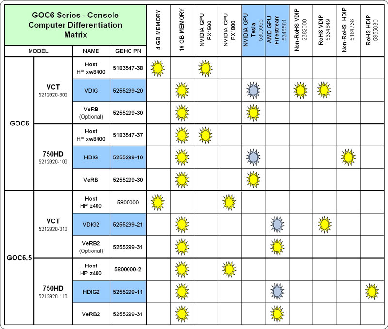
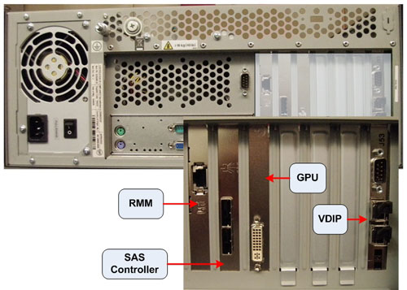
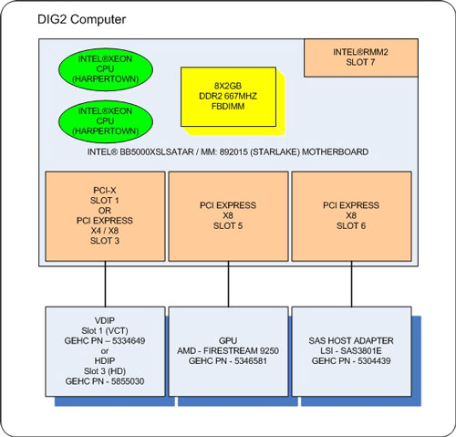
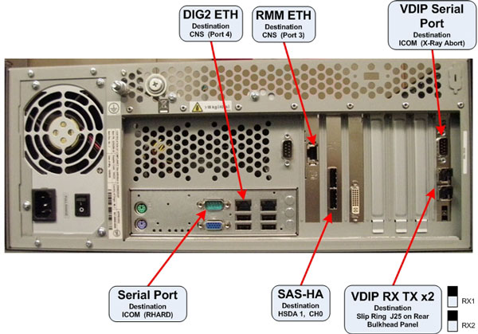

Operating Documentation
Direction 5193574-800, Rev# 22
LightSpeed 7.X Service Methods
Module Version 2.0, Version Date 8/16/10
Operating Documentation |
| Last Revised: | 28 May 2010 |
Illustration 1: DIG2 Computer

The Data Acquisition and Image Generation Computer Version 2 (DIG2) used in the Global Operator Console Series (GOC 6.5) is a custom designed computer based on the Intel x86 multi-core processor server platform and manufactured by a third party vendor for GE Healthcare.
| NOTE: | The DIG Computer used in the GOC6 Series Operator Consoles
will have several configurations based on system and console utilization.
The primary difference with DIG Computer configurations is based
on the type of DAS Interface Processor (DIP) and GPU boards installed
inside the DIG Computer. The version of DIP card installed in the
DIG computer depends on the DAS type the DIG Computer will interface
with. VDIP cards installed in VDIG computers are utilized with VCT
DAS types, where as HDIG cards installed in HDIG computers are utilized
with 750HD DAS. DIG and VeRB Computers utilize NVidia GPU's. DIG2
and VeRB2 Computers utilize AMD GPU's. Like type GPU's (NVidia or
AMD) must be installed in both the DIG and VeRB Computers in the same
console. Mixing of GPU type will result in image quality issues and
is not permitted. Illustration 2: DIG Configurations  |
The DIG2 computer serve two purposes: raw scan data save and image reconstruction. The raw scan data is transmitted from the Data Acquisition Subsystem (DAS), across the Slip Ring, to the DIG2 computer. The DIG2 Computer saves this data to a High Speed Disk Array (HSDA) and later retrieves it for image reconstruction.
Image reconstruction is performed on DIG2 Computer native processors and an add-in GPU card. The Data Acquisition and Reconstruction Computer (DARC) and Image Generation Computers (IGs) previously performed these functions in earlier versions of GOC console configurations. The DIG2 Computer communicates with the Host Computer through the Console Network Switch (CNS) and performs a remote boot through this connection.
Illustration 3: DIG2 Computer with VDIP Card (Rear)

Illustration 4: DIG2 Interconnect Diagram

The following is a brief theory overview of the hardware and software associated with the DIG2 Computers.
The DIG2 Computer is a two (2) Quad-Core Intel® Xeon® processor (Harpertown) based computer configured by GE Healthcare utilizing the Intel Starlake (S5000XSL) server class board.
Table 1: DIG2 Basic Configuration
| Quantity | Description |
|---|---|
| 1 | Intel® Starlake (S5000XSL) server class motherboard |
| 8 | 2 GB, DDR2 ECC 667MHz PC5300 DIMM Memory Modules (total of 16 GB) |
| 1 | AMD® Firestream™ 9250 GPU Card |
| 1 | SAS Controller Card, LSI Logic - LSISAS3801E |
| 1 | 400 Watt PSU |
| 1 | VCT DAS Interface Processor Board (VDIP) OR |
| 1 | 750HD DAS Interface Processor Board (HDIP) |
Illustration 5: DIG2 Computer Block Diagram

The motherboard contained in the DIG2 Computer utilizes the following integrated hardware.
Dual LGA Socket J (771-pin LGA) Multi-core Intel® Xeon® Processor Motherboard with:
2 Intel® Quad-core Zeon® (Harpertown) 2.33 GHz Processors w/4MB shared L2 Cache
Front Speed Buss of 1333 MHz
8 Memory Slots (32 GB max.)
Integrated
Video
2 x GBit NIC Ports
USB 2.0 Ports
SATA Hard Disk Controller (Not used)
Remote Management Module (RMM)
Complete details of the Intel® Starlake (S5000XSL) server class motherboard can be obtained from Intel® support web site http://support.intel.com.
See the following illustrations for Motherboard Layout.
Illustration 6: Intel® Starlake Motherboard Layout

Table 2: Motherboard Components
| Item | Description | Item | Description | Item | Description | Item | Description |
|---|---|---|---|---|---|---|---|
| A | PCI-X 100 MHz Slot 1 | M | System Fan 6 Header | Y | System Fan 2 Header | KK | SATA 2 or SAS 0 |
| B | PCI-X 133/100 MHz Slot 2 | N | System Fan 5 Header | Z | System Fan 1 Header | LL | SATA 3 or SAS 1 |
| C | PCI-E x8 Slot 3 | O | Main Power Connector | AA | Processor Power Connector | MM | SATA 4 or SAS 2 |
| D | RMM NIC Connector | P | Aux. Power Signal Connector | BB | USB Header | NN | SATA 5 or SAS 3 |
| E | PCI-E x8 Slot 4 | Q | DIMM Sockets | CC | IDE Connector | OO | USB Port |
| F | PCI-E x16 Slot 5 (x8 electrically) | R | Processor 1 Socket | DD | Enclosure Management SATA SGPIO Header | PP | Front Control Panel Header |
| G | PCI-E x16 Slot 6 (x8 electrically) | S | Processor 2 Socket | EE | Local Control Panel Header | SATA SW RAID 5 Key Connector | |
| H | CMOS Battery | T | Processor 2 Fan Header | FF | Hot-swap Backplane B Header | RR | SAS SW RAID 5 Key Connector |
| I | P12V4 Connector | U | Processor 1 Fan Header | GG | Enclosure Management SAS SES 12C Header | SS | Serial B / Emergency Management Port |
| J | Connector for RM Module | V | System Fan 4 Header | HH | Hot-swap Backplane A Header | TT | Chassis Intrusion Header |
| K | Back Panel I/O Ports | W | System Fan 3 Header | II | SATA 0 | ||
| L | Diagnostics and Identify LEDs | X | IPMB Connector | JJ | SATA 1 |
Illustration 7: Intel® Starlake ATX I/O Layout

Table 3: Motherboard ATX I/O Layout
| Item | Description | Item | Description |
|---|---|---|---|
| A | PS/2 Mouse | E | NIC Port 1 (1Gbit) |
| B | PS/2 Keyboard | F | USB Port 2 (top), 3 (bottom) |
| C | Serial Port | G | NIC Port 2 (1Gbit) |
| D | Video | H | USB Port 0 (top), 1 (bottom) |
Illustration 8: Intel® Starlake Motherboard Block Diagram

The DIG2 Computer is equipped to handle up to eight (8) fully buffered DIMM Memory Modules.
The base memory configuration contains eight (8) two (2) GB, DDR2 ECC 667MHz PC5300 DIMM Memory Modules (total of 16 GB).
See the following illustration for Memory Slot Assignment.
Illustration 9: Memory Slot Assignment

Network interface support for the DIG2 computer is handled by an integrated Dual Gbit Ethernet controller on the DIG2 motherboard. Each network interface controller (NIC) drives two LEDs located on each network interface connector. The Link/Activity LED at the left of the connector indicates connection when on, and transmit / receive activity when blinking. The Speed LED at the right of the connector indicates data rate. See the following illustrations for NIC LED status.
Illustration 10: NIC Status LEDs

Table 4: Motherboard NIC LED Status
| LED Color | LED State | NIC State |
|---|---|---|
| Green / Amber (Right) | Off | 10 Mbps |
| Green | 100 Mbps | |
| Amber | 1000 Mbps | |
| Green (Left) | On | Active Connection |
| Blinking | Transmit / Receive activity |
The DIG2 Computer utilizes a Serial Attached SCSI (SAS) control card to interface the High Speed Disk Array/s and is installed in Slot 6 on the motherboard. This controller is responsible for directing raw acquisition scan data coming from the Data Acquisition Subsystem (DAS) to the HSDA and later retrieves the data for image reconstruction. The LSI™ Logic - LSISAS3801E card is a 3Gb miniSAS 8 -port host bus adapter. This host bus adapter supports large capacity external storage RAID and non-RAID enclosures by connecting a PCI Express bus with two external x4 SFF8088 miniSAS connectors.
The AMG Firestream Graphics Processor card is the main image reconstruction processor in the GRE subsystem and supplies the same functionality as the RAC boards in previous generation of the GOC consoles. The Firestream 9250 card utilizes the RV770 GPU which is specifically designed to handle highly parallel computation, needed for image generation and reconstruction.
Firestream 9250 GPU specifications:
Second generation AMD GPU with DP-FP in hardware
1GB on-board GDDR3 memory
Fits in one full-length, single slot with one open PCIe 2.0, x16 slot
The VDIP card converts the optical signal received from the Gantry / DAS Sub-systems into electrical raw data and writes that data to one of the double buffers on the card. When the received data count reaches a predetermined value it will switch over to the other buffer. The DIG2 Computer then receives this data via the PCI bus.
DAS Transfer Rate: 2.50 GBaud per channel.
For 32-slice configuration, use channel 1 for data transfer. Do not use channel 2.
For 64-slice configuration, use channel 1 for transferring data from DAS A-side, and channel 2 for transferring data from DAS B-side.
Optical fiber channel 1 and channel 2 cannot be swapped. When channel 1 or channel 2 has the wrong data for the channel, the VDIP will generate a PCI interrupt and show “incorrect channel connection” at the interrupt status register.
The DIG2 Computer is powered by a 400 Watts PSU. Rated voltage range 95-132 VAC and line frequency 50-60 (+/- 3) Hz, auto switching and power factor correction.
See the following illustration for Connection Labeling of the DIG2 Computer in the GOC 6.5 console.
Illustration 11: VDIG2 Computer Connections

The DIG2 OS and Application software is located on a dedicated Network File System on the Host Computer hard drive. Upon successful POST of the DIG2 Computer hardware, the DIG2 remote boots from this dedicated Network File System and loads the operation and application software to the DIG2 memory. The DIG2 Computer runs on a specifically configured GE Healthcare Linux OS and Application software, found on the Host Computer Operating Disk (/usr/g/darc).
The DIG2 Computer is equipped with a ROM-based initialization firmware that starts the server hardware. The BIOS of the computer is a collection of machine language programs stored as firmware in ROM. The BIOS ROM includes such functions as POST, PCI device initialization, Plug 'n Play support, power management activities, and the Computer Setup Utility.